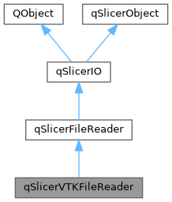

|
Slicer 5.13
Slicer is a multi-platform, free and open source software package for visualization and medical image computing
|
Loading...
Searching...
No Matches
|
Slicer 5.13
Slicer is a multi-platform, free and open source software package for visualization and medical image computing
|
#include <Base/QTCore/qSlicerVTKFileReader.h>


Public Types | |
| typedef qSlicerFileReader | Superclass |
 Public Types inherited from qSlicerFileReader Public Types inherited from qSlicerFileReader | |
| typedef qSlicerIO | Superclass |
| Public Types inherited from qSlicerIO | |
| typedef QString | IOFileType |
| typedef QVariantMap | IOProperties |
| typedef QObject | Superclass |
Public Member Functions | |
| bool | canLoadFile (const QString &file) const override |
| double | canLoadFileConfidence (const QString &file) const override |
| QString | description () const override |
| Unique name of the reader/writer. | |
| bool | examineFileInfoList (QFileInfoList &fileInfoList, QFileInfo &archetypeFileInfo, qSlicerIO::IOProperties &ioProperties) const override |
| QStringList | extensions () const override |
| Q_INVOKABLE vtkMRMLFileReader * | fileReader () const |
| VTK-based reader that performs all the tasks of this class. | |
| IOFileType | fileType () const override |
| Multiple readers can share the same file type. | |
| vtkMRMLFileIOHandler * | ioHandler () const override |
| Returns the VTK-based reader (same as fileReader()). | |
| bool | load (const IOProperties &properties) override |
| Properties available: fileMode, multipleFiles, fileType. | |
| QStringList | loadedNodes () const override |
| qSlicerVTKFileReader (vtkMRMLFileReader *reader, QObject *parent=nullptr) | |
| void | setMRMLScene (vtkMRMLScene *scene) override |
| Set the scene of this object and of the VTK-based reader. | |
| vtkMRMLMessageCollection * | userMessages () const override |
| Additional warning or error messages occurred during IO operation. | |
| ~qSlicerVTKFileReader () override | |
| Public Member Functions inherited from qSlicerFileReader | |
| qSlicerFileReader (QObject *parent=nullptr) | |
| Q_INVOKABLE QStringList | supportedNameFilters (const QString &fileName, int *longestExtensionMatchPtr=nullptr) const |
| ~qSlicerFileReader () override | |
| Public Member Functions inherited from qSlicerIO | |
| virtual Q_INVOKABLE qSlicerIOOptions * | options () const |
| qSlicerIO (QObject *parent=nullptr) | |
| ~qSlicerIO () override | |
| Public Member Functions inherited from qSlicerObject | |
| vtkMRMLScene * | mrmlScene () const |
| Return a pointer on the MRML scene. | |
| qSlicerObject () | |
| virtual | ~qSlicerObject () |
Protected Member Functions | |
| void | setFileReader (vtkMRMLFileReader *reader) |
| void | setLoadedNodes (const QStringList &nodes) override |
Protected Attributes | |
| QScopedPointer< qSlicerVTKFileReaderPrivate > | d_ptr |
| Protected Attributes inherited from qSlicerFileReader | |
| QScopedPointer< qSlicerFileReaderPrivate > | d_ptr |
| Protected Attributes inherited from qSlicerIO | |
| QScopedPointer< qSlicerIOPrivate > | d_ptr |
| Protected Attributes inherited from qSlicerObject | |
| QScopedPointer< qSlicerObjectPrivate > | d_ptr |
Additional Inherited Members | |
| Static Public Member Functions inherited from qSlicerIO | |
| static IOProperties | fromVTKProperties (vtkMRMLIOProperties *vtkProperties) |
| static bool | qImageToVTKImageData (const QImage &image, vtkImageData *imageData) |
| Convert Qt image to VTK image (RGBA, unsigned char). | |
| static void | toVTKProperties (const IOProperties &properties, vtkMRMLIOProperties *vtkProperties) |
| static QImage | vtkImageDataToQImage (vtkImageData *imageData) |
| Convert VTK image (unsigned char, 1, 3, or 4 components) to Qt image. | |
Qt interface of a VTK-based file reader: all methods are delegated to the VTK-based reader (see fileReader()).
See https://slicer.readthedocs.io/en/latest/developer_guide/mrml_overview.html#qt-interface
Definition at line 31 of file qSlicerVTKFileReader.h.
Definition at line 35 of file qSlicerVTKFileReader.h.
|
explicit |
|
override |
|
overridevirtual |
Returns true if the reader can load this file. Default implementation is a simple and fast, it just checks if file extension matches any of the wildcards returned by extensions() method. This method is kept for backward compatibility, readers should override canLoadFileConfidence method instead of this method to indicate if they can read a file.
Reimplemented from qSlicerFileReader.
|
overridevirtual |
Returns a positive number (>0) if the reader can load this file. The higher the returned value is the more confident the reader it is the most suitable class to load the file. By default, the method calls canLoadFile and if it returns true then the returned confidence value is 0.5 + 0.01 * matchedFileExtensionLength. The additional confidence for longer matched file extensions allow prioritization of more specific readers. For example, "*.seg.nrrd" is more specific than "*.nrrd"; "*.nrrd" is more specific than "*.*".
Reimplemented from qSlicerFileReader.
|
overridevirtual |
Unique name of the reader/writer.
Implements qSlicerIO.
|
overridevirtual |
Implements the file list examination for the corresponding method in the core IO manager.
Reimplemented from qSlicerFileReader.
|
overridevirtual |
Return a list of the supported extensions. Please read QFileDialog::nameFilters for the allowed formats Example: "Image (*.jpg *.png *.tiff)", "Model (*.vtk)"
Reimplemented from qSlicerFileReader.
| Q_INVOKABLE vtkMRMLFileReader * qSlicerVTKFileReader::fileReader | ( | ) | const |
VTK-based reader that performs all the tasks of this class.
|
overridevirtual |
Multiple readers can share the same file type.
Implements qSlicerIO.
|
overridevirtual |
Returns the VTK-based reader (same as fileReader()).
Reimplemented from qSlicerIO.
|
overridevirtual |
Properties available: fileMode, multipleFiles, fileType.
Reimplemented from qSlicerFileReader.
|
overridevirtual |
Return the list of generated nodes from loading the file(s) in load(). Empty list if load() failed
Reimplemented from qSlicerFileReader.
|
protected |
Set the VTK-based reader that performs all the tasks of this class. The current scene is set in the reader.
|
overrideprotectedvirtual |
Must be called in load() on success with the list of nodes added into the scene.
Reimplemented from qSlicerFileReader.
|
overridevirtual |
Set the scene of this object and of the VTK-based reader.
Reimplemented from qSlicerIO.
|
overridevirtual |
Additional warning or error messages occurred during IO operation.
Reimplemented from qSlicerIO.
|
protected |
Definition at line 67 of file qSlicerVTKFileReader.h.